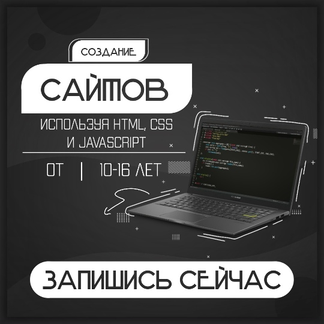
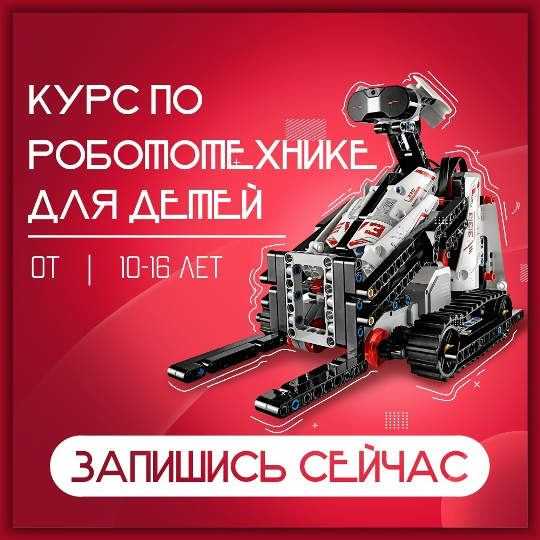
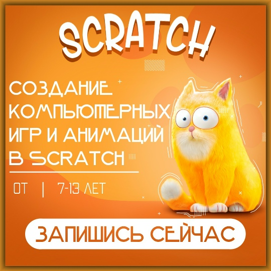
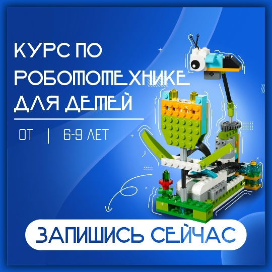

HTML Website Maker
Для кого: дети 10-16 лет
Цель курса : обучить ребенка владению востребованными языками программирования.
Длительность обучения: 2 семестра
Первый семестр: ученики осваивают основы верстки — HTML и CSS. Они учатся работать со структурой страницы: добавлять текст, изображения, видео, ссылки и кнопки, а также стилизовать их. Итогом семестра станет защита собственного проекта — готового сайта.
Второй семестр: программа углубляется в интерактивность. Ребята изучают продвинутый CSS и язык программирования JavaScript. Это позволит им «оживить» свои проекты: добавить всплывающие окна, анимации и даже создать простые игры или квесты прямо на сайте.
Итог :gо завершении курса ученики смогут самостоятельно разрабатывать сайты средней сложности.

Для кого: дети 10-16 лет
Цель курса: пробудить интерес к инженерному делу, приобретение навыков конструирования.
Курс предлагает увлекательное погружение в мир технологий и программирования.
Длительность обучения: 4 семестра
В рамках обучения ребята решают разнообразные технические задачи, такие как создание автоматического погрузчика или системы пожаротушения, используя микроконтроллер Lego Mindstorms и множество датчиков.
В первых двух семестрах ученики изучают механические узлы и программные команды, знакомятся с различными датчиками: такими как инфракрасный, ультразвуковой, гироскоп и другие. Основное внимание уделяется разработке алгоритмов и программированию.
В третьем и четвертом семестрах, когда ученики уже освоили основы, акцент смещается на проектную и конкурсную деятельность. Лучшие участники получают возможность представлять свои достижения на региональных и всероссийских соревнованиях, что способствует их дальнейшему развитию в области инженерии и технологий.
Итог : По окончании обучения ребенок приобретает навыки нестандартного мышления для решения практических задач, а так же приобретает опыт в создании роботов и сложных механизмовы.

Курс «Юный аниматор и гейм дизайнер»
Для кого : дети 7-13 лет
Цель курса: пробудить интерес к созданию веб анимации а так же к созданию игр.
Обучение проходит в визуальной среде Scratch, основанной на принципах объектно-ориентированного программирования.
Длительность обучения 2 семестра
Первый семестр: знакомство с инструментами. Под руководством преподавателя дети учатся создавать первых игровых персонажей, простые анимации и компьютерные игры, следуя готовым сценариям и видеоурокам.
Второй семестр: работа над собственным проектом. Ученики самостоятельно придумывают концепцию и сценарий игры, а преподаватель помогает им реализовать задуманное. Занятия проходят в атмосфере творческой свободы.
Итог: За год обучения ребенок получает навыки создания анимации и разработки компьютерных игр

Курс «Юный инженер: от простого к сложному»
Для кого: дети 6–9 лет.
Цель курса: пробудить интерес к инженерному делу, робототехнике и естественным наукам через увлекательное конструирование.
Вместо скучной теории — моделирование знакомых жизненных процессов. Ребята узнают, как происходит опыление цветов, изучат силу тяги и трения, создавая собственные модели автомобилей и космических кораблей.
Длительность обучения 4 семестра:
1 семестр: Основы конструирования и программирования.
Дети знакомятся с миром робототехники, собирая и программируя модели по инструкциям. Это позволяет изучить базовые механические узлы и команды. Занятия проходят в атмосфере свободного творчества.
2 семестр: Углубленная механика.
В программу вводятся элементы математики и физики. Ребята переходят от сборки по инструкции к самостоятельному конструированию, а программирование становится более свободным.
3 и 4 семестры: Продвинутое программирование.
Основной упор делается на развитие алгоритмического мышления и математических навыков. Ученики работают над сложными проектами, готовясь к участию в конкурсах и защите своих работ.
Итог: за два года ребенок получает глубокие знания в области программирования, конструирования и естественных наук.
HTML Website Maker